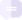

In this article we explain the basic terms and concepts in Checkmk, such as host, service, user, contact group, notification, time period, scheduled downtime.
1. States and events
It is important to understand the basic differences between states and events — and namely for a very practical benefit. Most classic IT monitoring systems revolve around events. An event is something that occurs uniquely at a particular time. A good example would be error when accessing drive X. Typical sources of events are syslog messages, SNMP traps, the Windows Event Log, and log file entries. Events are quasi-spontaneous (self-generating, asynchronous) occurrences.
In contrast a state describes a sustained situation, e.g. drive X is online. In order to observe the state of something, the monitoring system must regularly poll it. As the example shows, in monitoring it is often possible to choose to work with events or with states.
Checkmk can accommodate both states and events, but, where the choice is available, it will always prioritize state-based monitoring. The reason for this lies in the numerous advantages with this method. Some of these are:
An error in the monitoring itself is detected immediately, because it is obviously noticeable when the status query no longer works. The non-occurrence of a message, on the other hand, does not give any certainty that the monitoring is still working.
Checkmk itself can control the rate at which states are polled. There is no risk of an event storm in global error situations.
Regular checking in a fixed time-frame enables the capturing of metrics to record their time history.
Even in chaotic situations — a power failure in a data center, for example — one always has a reliable overall status.
One can well say that Checkmk’s state-based monitoring is the norm. For processing events there is also the Event Console. This is specialized for the correlation and evaluation of large numbers of events and is seamlessly-integrated into the Checkmk platform.
2. Hosts and services
2.1. Hosts
Everything in Checkmk revolves around hosts and services. A host can be many things, e.g.:
A server
A network device (switch, router, load balancer)
A measuring device with an IP connection (thermometer, hygrometer)
Anything else with an IP address
A cluster of several hosts
A virtual machine
A Docker container
In monitoring a host always has one of the following states:
| State | Color | Meaning |
|---|---|---|
UP |
green |
The host is accessible via the network (this generally means that it answers a PING.) |
DOWN |
red |
The host does not answer network inquiries, is not accessible. |
UNREACH |
orange |
The path to the host is currently blocked to monitoring, because a router or switch in the path has failed. |
PEND |
gray |
The host has been newly-included in the monitoring, but never before been polled. Strictly-speaking this is not really a state. |
Alongside the state, a host has a number of other attributes that can be configured by the user, e.g.:
A unique name
An IP address
Optional - an alias, that must not be unique
Optional - one or more parents
2.2. Parents
For the monitoring to be able to determine the UNREACH state, it must know which path it can use to contact each individual host. For this purpose, one or more so-called parent hosts can be specified for each host. For example, if a server A as seen from monitoring can only be reached via a router B, then B is a parent host of A. Only direct parents are configured in Checkmk. This then results in a tree-like structure with the Checkmk site in the middle (shown here as ):
Let’s assume that in the network topology example shown above, the hosts myhost and myhost4 are no longer reachable. The failure of myhost4 can be explained by the fact that myhost has failed. Therefore, myhost4 is classified as UNREACH in the monitoring. It is simply not possible to clearly determine why Checkmk can no longer reach myhost4, and the DOWN status would therefore be misleading in some circumstances. Instead, the UNREACH has the effect of suppressing notifications by default. This is after all the most important task of the parents concept, i.e. the avoidance of mass notifications in the event that an entire dependent network segment becomes unreachable for the monitoring due to an interruption at a single point.
The prevention of false alarms is also served by feature of the Checkmk Micro Core (CMC) used in the commercial editions. Here, the state change for a failed host is held back for a few moments and proceeds only when it is certain that the parent is still reachable. If, on the other hand, the parent is definitely DOWN, the host will switch to UNREACH — without a notification being triggered.
In some cases a host could have multiple parents, for example, when a router is running highly available in a cluster. It is sufficient for Checkmk to be able to uniquely determine the status of the host when one of these parents is reachable. Thus, when a host has multiple parents and at least one of these parents is UP, the host is considered reachable in the monitoring. In other words, in such a situation, the host will not automatically switch to the UNREACH state.
2.3. Services
A host has a number of services. A service can be anything — please don’t confuse this with services in Windows. A service is any part or aspect of the host that can be OK, or not OK. Naturally the state can only be determined if the host is in UP state.
A service being monitored can have the following states:
| State | Color | Meaning |
|---|---|---|
OK |
green |
The service is fully in order. All values are in their allowed range. |
WARN |
yellow |
The service is functioning normally, but its parameters are outside their optimal range. |
CRIT |
red |
The service has failed. |
UNKNOWN |
orange |
The service’s status cannot be correctly determined. The monitoring agent has delivered defective data or the element being monitored has disappeared. |
PEND |
gray |
The service has been newly-included and has so far not provided monitoring data. |
When determining which condition is 'worse', Checkmk utilizes the following sequence:
OK → WARN → UNKNOWN → CRIT
2.4. Checks
A check ensures that a host or a service can be assigned a state. Which states these can be is described in the previous section. Services and checks are closely related. For this reason these terms are sometimes used interchangeably, perhaps even in this User Guide, although they are in fact different things.
In the Setup you can display which check plug-in is responsible for each service. Open the properties of a host with Setup > Hosts and then in the Hosts > Service Configuration menu the list of the services for this host. Then use Display > Show plugin names to display a new column which will show the check plug-in responsible for each service:
As you can see from the example of the df check plug-in, a check plug-in can be responsible for more than one service. By the way, the names of the check plug-ins listed in the column are also links that show a description of the check plug-in.
The connection and dependency of services and checks can also be seen in the monitoring.
In the service list for a host in monitoring, you can see that in the  action menu at the Reschedule entry, there is a yellow arrow for some services (), but a gray arrow for most of the others (
action menu at the Reschedule entry, there is a yellow arrow for some services (), but a gray arrow for most of the others ( ).
A service with the yellow arrow is based on an active check:
).
A service with the yellow arrow is based on an active check:
Such an active check is executed directly by Checkmk. Services with the gray arrow are based on passive checks whose data is fetched from another service, the Check_MK service. This is done for performance reasons and is a special feature of Checkmk.
3. Host and service groups
To improve the overview, you can organize hosts into host groups and services into service groups.
A host/service can also be in more than one group.
The creation of these groups is optional and not necessary for the configuration.
However, if for example you have set up the folder structure according to geographic locations, it could be useful to create a host group Linux servers which groups all Linux servers together, no matter where they are located.
You can find out more about host groups in the article on the structuring of hosts and about service groups in the article on services.
4. Contacts and contact groups
Contacts and contact groups offer the possibility of assigning persons to hosts and services. A contact correlates with a user name or web interface. The correlation with hosts and services does not occur directly however, rather via contact groups.
Firstly, a contact (e.g. harri) is assigned to a contact group (e.g. linux-admins).
Then hosts — or as required, individual services — can be assigned to the contact group.
In this way users, and likewise hosts and services can be assigned to multiple contact groups.
These assignments are useful for a number of reasons:
Who is permitted to view something?
Who is authorized to configure and control which hosts and services?
Who receives notifications, and for which problems?
By the way — the user cmkadmin, who is automatically defined by the creation of a site, is always permitted to view all hosts and services even when cmkadmin is not a contact.
This is determined through their role as administrator.
5. Users and roles
While contacts and contact groups control who is responsible for a particular host or service, permissions are controlled by roles. Checkmk is supplied with a number of predefined roles from which you can later derive further roles as required. Each role defines a set of permissions which can later be customized. The meaning of the standard roles is:
| Role | Description |
|---|---|
|
May see and do everything, has all permissions. |
|
May only see what they are a contact for. May manage hosts in folders assigned to them. May not make global settings. |
|
May only register a host’s Checkmk agent with the Checkmk server — nothing else. |
|
May see everything, but may not configure anything or intervene in monitoring. |
6. Problems, events and notifications
6.1. Handled and unhandled problems
Checkmk identifies every host that is not UP, and every service that is not OK as a problem. A problem can have two states: unhandled and handled. The procedure is that a new problem is first treated as unhandled. As soon as someone acknowledges (confirms) the problem it will be flagged as handled, and no surprise, unhandled problems are those which have not yet been attended to. The Overview in the sidebar therefore differentiates these two types of problems:
By the way: service problems from hosts that are currently not UP are not identified as problems.
Further details on acknowledgments can be found in its own article, Acknowledging problems.
6.2. Notifications
When a host’s state changes, (e.g. from OK to CRIT), Checkmk registers a monitoring event.
These events may or may not generate a notification.
Checkmk is so designed that whenever a host or service has a problem, an email is sent to the object’s contacts (please note that the cmkadmin user,
by default, is not a contact for any objects).
These can be customized very flexibly however.
Notifications also depend on a number of parameters.
It is simplest when we look at cases for which notifications are not sent.
Notifications are suppressed …
…when notifications have been globally-deactivated in the Master control
…when notifications have been deactivated in the host/service
…when notifications have been deactivated for a particular status of the host/service (e.g. no notifications for WARN)
…when the problem affects a service whose host is DOWN or UNREACH
…when the problem affects a host, whose parents are all DOWN or UNREACH
…when for the host/service a notification period has been set that is not currently active
…when the host/service is currently flapping

…when the host/service is currently in a scheduled downtime
If none of these prerequisites for suppressing notifications are satisfied, the monitoring core then creates a notification, which in a second step passes through a chain of rules. In these rules you can define further exclusion criteria, and decide whom should be notified and in what form (email, SMS, etc.)
All particulars concerning notifications can be found in their own Notifications article.
6.3. Flapping hosts and services
It sometimes happens that a service continuously and quickly changes its condition.
In order to avoid continuous notifications, Checkmk switches such a service into the flapping state.
This is illustrated with the  icon.
When a service enters a flapping state, a notification will be generated which informs the user of the situation, and silences further notifications.
After a suitable time, if no further rapid changes are occurring, and a final (good or bad) status is evident, then the flapping status disappears and normal notifications resume.
icon.
When a service enters a flapping state, a notification will be generated which informs the user of the situation, and silences further notifications.
After a suitable time, if no further rapid changes are occurring, and a final (good or bad) status is evident, then the flapping status disappears and normal notifications resume.
6.4. Scheduled downtimes
If you perform maintenance work on a server, device or software, you will normally want to avoid potential problem notifications during this time. In addition, you will probably want to advise your colleagues that problems appearing in monitoring during this time may be temporarily ignored.
For this purpose you can enter a condition of scheduled downtimes on a host or service. This can can be done directly before starting the work, or in advance. Scheduled downtimes are illustrated by the icons:
The service is in a scheduled downtime. |
|
|
The host is in a scheduled downtime. Services whose host is in a downtime are also marked with this icon. |
While a host or service has a scheduled downtime:
No notifications will be sent.
Problems will not be shown in the Overview snap-in.
Additionally, when you wish to later document statistics on the availability of hosts and services it is a good idea to include scheduled downtimes. These can be factored into later availability evaluations.
6.5. Outdated hosts and services (Stale)
If you have been working with Checkmk for a while, it is possible that spider webs will be displayed in your host and service views. For services, for example, it looks like this:

These spider webs symbolize the stale state. Whenever there is a stale host or service, this will also be shown in the Overview snap-in, which will be extended by the column Stale.
But what exactly does the stale state mean? In general, a host or service is marked as stale when Checkmk no longer receives up-to-date information about its status over a longer period of time:
A service will become stale: If an agent or even just an agent plug-in fails — for whatever reason — over a longer period of time, the agent will no longer provide current data for evaluation. Services whose state is determined by passive checks cannot be updated, as these depend on the agent’s data. The services remain in their last status, but are marked as stale after a certain time has elapsed.
A host becomes stale: If the Host Check Command, which checks the connectivity of the host, provides no up-to-date response, the host retains the last determined state — but is then marked as stale.
You can adjust the time limit after which the hosts and services become stale. For this, read the section on check intervals.
7. Time periods

Weekly recurring time periods are used in various places in the configuration.
A typical time period could be called working hours and include the times from 8:00 to 17:00 each day, on all days of the week except Saturday and Sunday.
The period 24X7 is predefined, which simply includes every day.
Time periods can also include exceptions for certain calendar days — e.g. for the Bavarian public holidays.
Some important points where time periods are used are:
Limiting the times within which notifications are made (notification period).
Limiting the times within which checks are executed (check period).
Service times for calculating availability (service period).
Times within which certain rules in the Event Console will take effect.
You can read how to set periods in the Time periods article.
8. Check periods, check intervals and check attempts
8.1. Specifying check periods
You can restrict the time periods in which checks are executed. The rule sets Check period for hosts, Check period for active services and Check period for passive Checkmk services serve this purpose. Use these rules to select one of the available time periods as the check period.
8.2. Setting check intervals
Checks are executed at fixed intervals within state-based monitoring. Checkmk uses a default of one minute for service checks and 6 seconds for host checks with a Smart Ping.
These defaults can be overridden using the Normal check interval for service checks and Normal check interval for host checks rule sets:
Increase to a longer interval to save CPU resources on the Checkmk server and the target system.
Reduce to a shorter interval to receive notifications faster and collect measured data at a higher resolution.
If you now combine a check period with a check interval, you can ensure that an active check is executed precisely once a day at a very specific time. For example, if you set the check interval to 24 hours and the check period to 2:00 to 2:01 every day (i.e. only one minute per day), Checkmk will ensure that the check is actually moved to this short time window.
The state of the services will no longer be updated outside of this defined check period and the services will be marked as stale with the  icon.
With the global setting Staleness value to mark hosts / services stale you can define how much time should pass before a host/service goes to stale.
This setting can be found under Setup > General > Global settings > User interface:
icon.
With the global setting Staleness value to mark hosts / services stale you can define how much time should pass before a host/service goes to stale.
This setting can be found under Setup > General > Global settings > User interface:
This factor represents n-times the check interval. So if your check interval is set to one minute (60 seconds), a service for which there are no new check results will go to stale after 1.5 times the time, i.e. after 90 seconds.
8.3. Modifying check attempts
With the help of the check attempts option you can avoid notifications in the event of sporadic errors. This makes a check less sensitive, so to speak. You can use the rule sets Maximum number of check attempts for host and Maximum number of check attempts for service for this purpose.
If the check attempts are set to 3, for example, and the corresponding service becomes CRIT, then initially no notification is triggered. Only if the next two checks also produce a result that is not OK, will the count of the current attempts increase to 3 and the notification will be sent.
A service that is in this intermediate state — i.e. is not OK but has not yet reached the maximum number of check attempts — will have a soft state. Only a hard state will actually trigger a notification.
9. Overview of the most important host and service icons
The following table provides a short overview of the most important status icons appearing beside hosts and services:
This service is in a scheduled downtime. |
|
|
This host is in a scheduled downtime. Services whose host is in a downtime are also marked with this symbol. |
This host/service is currently outside its notifications period. |
|
|
Notifications for this host/service are currently disabled. |
Checks for this service are currently disabled. |
|
|
This host/service has a stale status. |
|
This host/service has a flapping status. |
|
This host/service has an acknowledged problem. |
 |
There is a comment for this host/service |
|
This host/service is a part of a BI aggregation. |
|
Here you can directly-access the settings for the check parameters. |
|
Only for Logwatch services: here you can access stored log files. |
|
Here you can access a time series graph of the measured values. |
|
This host/service has inventory data. A click on it shows the related view. |
|
This check crashed. Click on it to view and submit a crash report. |